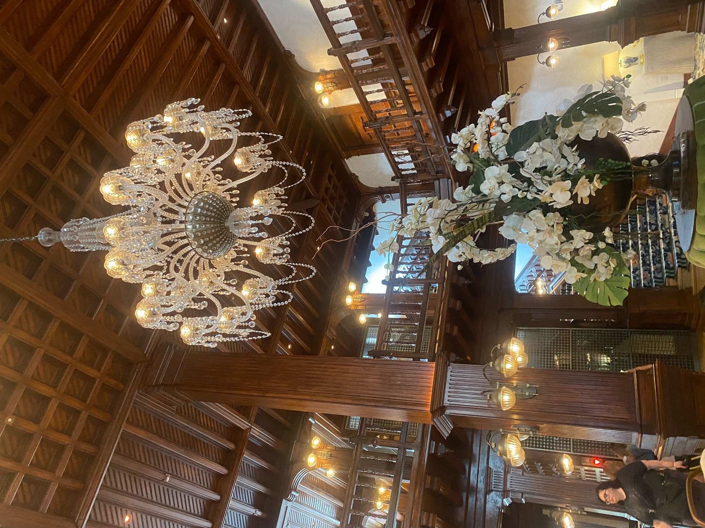
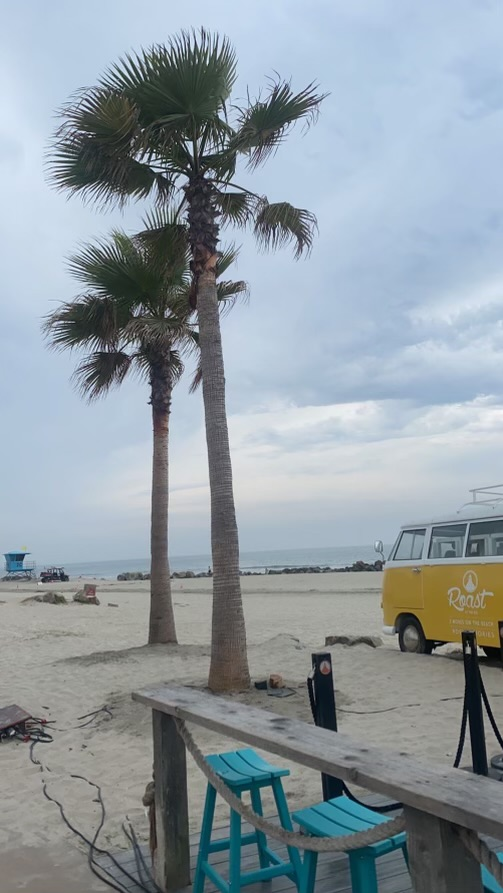
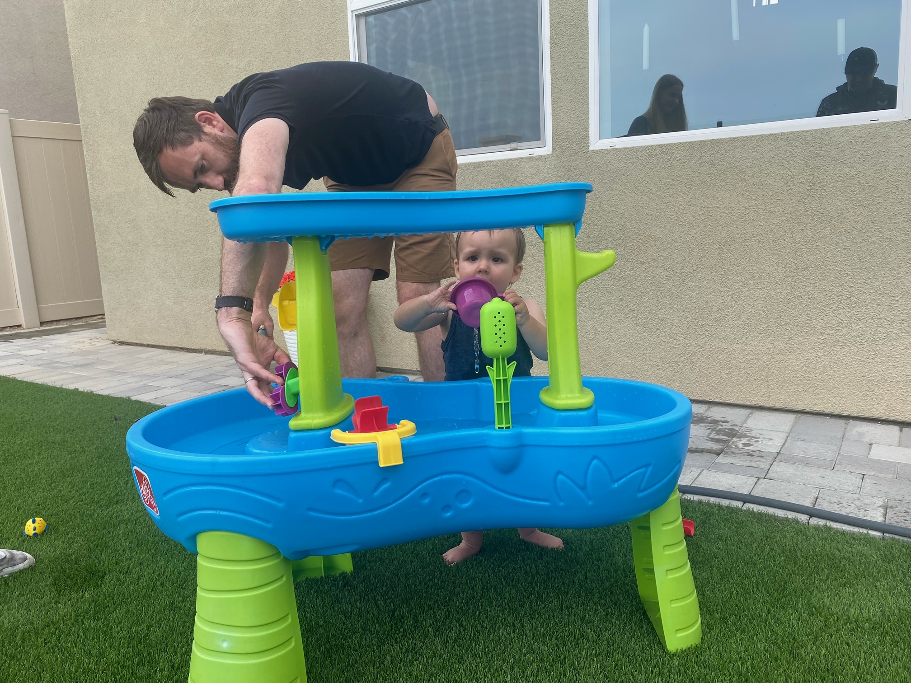

I’m not sure if I’m allowed to mention that Angie had a hangover, so I will be discreet.
Richard took us to the hotel where he works, at Coronado. It is a grand hotel that is very old (by American standards) and very expensive. Even though I hadn’t paid, I decided to use the loos as another swanky hotel reference point.

We wandered along the beach front, the $10m+ houses and the boutique shops and cafes in the area. There was more variety in 2 blocks here than the whole of beige LA. It started to rain. Outrageous! We had baked goods and drinks for lunch, then drove back to the house.

All back at the house, we FaceTimed Hilary and Chris to show Elliot’s new words and animal noises. We had a long chat and tried to finish the call with Elliot saying, “bye bye”. All opportunities and encouragement were given but he refused, so we dialled off. With genius timing, just at the screen went black he said, very clearly, “bye bye”!
Next on the list was a trip to Bath & Body Works and the outdoor mall more generally. The girls bought loads there. We enjoyed the big book store too and Jake got himself some more cheesecake for his babysitting later.
We played in the backyard for a while, including with the water toys. Jake and Freya also splashed each other like one-year olds. The lizards came out to play too. After drinking the water in his toy, Elliot went to bed while Angie served us some delicious pasta and chicken for tea.

Jake stayed behind with cheesecake while the rest of went to watch Barbie. Freya and Alison wore pink, along with a few other guests. The popcorn buckets were enormous! Overall, it was an excellent movie, with many laugh-out-loud moments. We all came out with big smiles on our faces. We laughed even louder when Freya read out Jake’s text saying that Elliot had farted so loud that he thought it was gunshot.